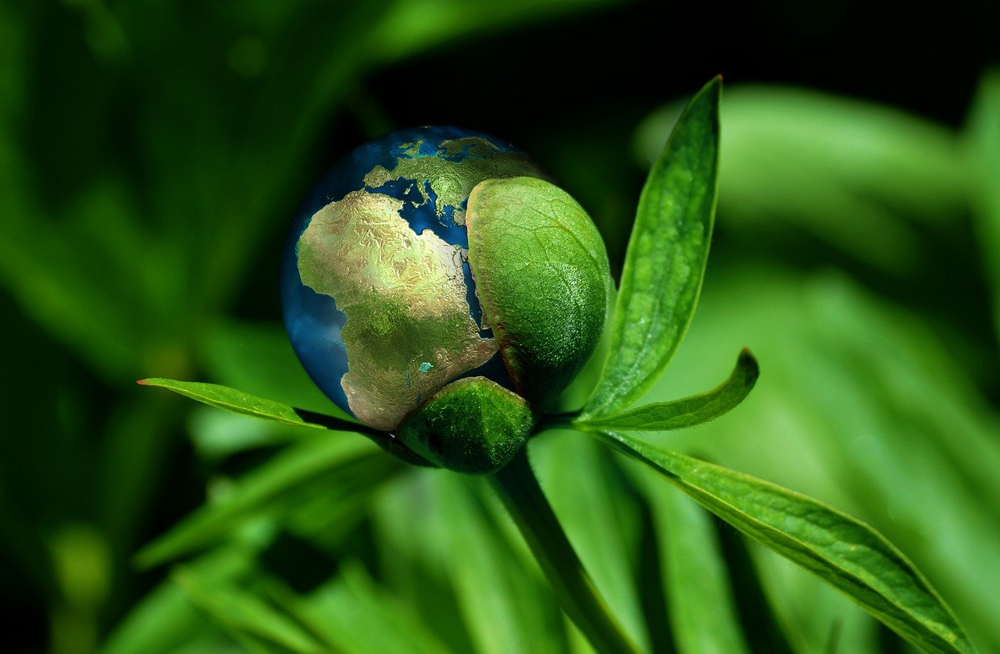

Agricultura
La agricultura (del latín agri 'campo' y cultūra 'cultivo', 'crianza'). Es el conjunto de actividades económicas y técnicas relacionadas con el tratamiento del suelo y el cultivo de la tierra para la producción de alimentos. Comprende todo un conjunto de acciones humanas que transforma el medio ambiente natural.

Agricultura ecológica
La agricultura ecológica, orgánica o biológica es un sistema de cultivo de una explotación agrícola basada en la utilización óptima de los recursos naturales, sin emplear productos químicos sintéticos u organismos genéticamente modificados (OGMs) en ninguna parte del proceso (ni como abono ni para combatir las plagas). De esta forma, se logra obtener alimentos orgánicos a la vez que se conserva la fertilidad de la tierra y se respeta el medio ambiente. Todo ello de manera sostenible, equilibrada y mantenible.